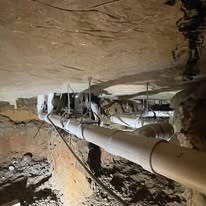
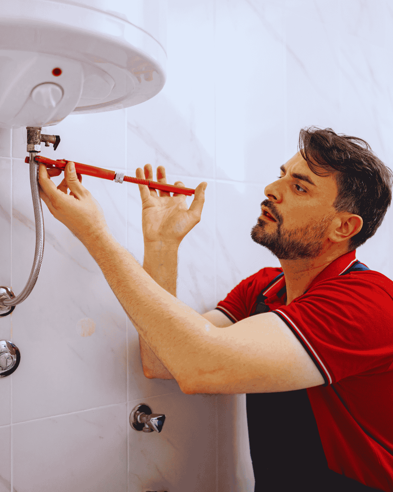

Faucet installation in Boynton Beach looks simple until you are lying under a cabinet with a corroded shutoff that will not turn. That is where most weekend attempts end, and it is why the job is worth handing over.
We replace the angle stops and supply lines as part of every faucet install. Old stops are the single most common source of a call-back leak, and swapping them while the cabinet is already open costs almost nothing extra.
Shower and tub valves are a bigger job because they live inside the wall. We handle cartridge swaps, full valve replacements and pressure-balanced upgrades, with access panels cut cleanly where a wall has to be opened.

Warning signs
When to Replace a Faucet or Shower Valve Instead of Repairing It
Cartridges are cheap. But some fixtures are past the point where parts help.
- A drip that returns weeks after a new cartridge
- Green or white crust built up around the base
- Handles that are stiff, loose or spin freely
- Low flow from one fixture only
- Visible corrosion on the supply connections
- A discontinued model with no parts available
- Water spots inside the cabinet under the sink
- Scalding when someone flushes a toilet nearby
Sudden temperature swings when another fixture runs mean the shower valve is not pressure balanced. Modern code requires one, and it is a safety issue.
What the visit includes
What Our Faucet and Fixture Installation Service Includes
The fixture is only part of the job. Everything it connects to matters just as much.
Shutoff replacement
New quarter-turn angle stops and braided supply lines so future work takes minutes, not hours.
Clean removal
Old fixture removed, mounting surface cleaned of old sealant and mineral crust, and the sink inspected.
Correct setting
Fixture set level and sealed, drain and pop-up assembly adjusted, aerator flushed of debris.
Test and clean up
Full flow and leak test under pressure, cabinet dried, packaging and the old fixture taken away.
New faucet still in the box?Call to have it installed properly, with new shutoffs and a leak test included.
Choosing fixtures
Picking Faucets and Shower Valves That Survive Coastal Florida
Fixtures wear out faster here than the manufacturer expects, for two reasons that have nothing to do with how you use them.
Hard water attacks the cartridge
Calcium deposits on cartridge seals and inside aerators, which is why a faucet that felt smooth on day one feels gritty three years later. Ceramic disc cartridges hold up far better than rubber compression washers on this water.
Salt air attacks the finish
Homes east of Federal Highway and along the Intracoastal take airborne salt through open windows and outdoor showers. Chrome and quality brushed nickel survive. Thin plated finishes pit within a couple of seasons, and untreated matte black is a poor bet in an oceanfront home.
What to specify
Solid brass bodies rather than zinc or plastic, ceramic disc cartridges, and stainless hardware anywhere exposed to weather. For outdoor showers and hose bibs, marine-grade components are worth the premium.
Pressure-balanced shower valves
If your shower goes scalding when someone flushes a toilet, the valve is not pressure balanced. Current code requires one, and it is a genuine safety issue rather than a comfort upgrade.
Bring us the model number
Send it before you order. We will tell you honestly whether that model has a parts availability problem or a known cartridge failure, which saves a return trip later.

Boynton Beach conditions
Why Fixtures Fail Early in Palm Beach County
Two things wear fixtures out here faster than the manufacturer expects. The first is hardness in the water supply, which deposits calcium on cartridge seals and inside aerators. It is why a faucet that was smooth on day one feels gritty three years later.
The second is salt air. Homes east of Federal Highway and along the Intracoastal get airborne salt through open windows and outdoor showers. Chrome and brushed nickel hold up reasonably well. Cheaper plated finishes pit within a couple of seasons.
If you are buying the fixture yourself, that is the practical advice: choose solid brass bodies with ceramic disc cartridges, and stick to finishes rated for coastal use. We are happy to look at a model number before you order and tell you whether it will last here.
Installation detail
Why Angle Stops and Supply Lines Matter on Every Fixture Install
The fixture is only part of the job. What it connects to determines whether you see a plumber again in six months.
Old shutoffs are the usual culprit
Multi-turn angle stops from the 1970s and 1980s seize with mineral buildup. Forcing one during a faucet swap frequently breaks the stem, which turns a one-hour job into a house-wide shutdown. We replace them with quarter-turn ball valves as standard.
Braided stainless supply lines
Old plastic or chrome-plated risers crack at the ferrule with age, and they fail without warning. Braided stainless lines cost a few dollars and are the cheapest insurance in the cabinet.
Drain assembly and trap
While the cabinet is open, the pop-up assembly, tailpiece and P-trap get inspected. Corroded chrome traps and badly pitched trap arms are common in older homes and they cause the slow drainage people blame on the new faucet.
Sealing and testing
The mounting surface gets cleaned of old sealant and mineral crust so the new base seats flat. Then the fixture is run under full pressure, checked at every joint, and the aerator is flushed of debris kicked loose during the work.
Bring your own fixture if you like
Labor pricing is the same whether we supply the fixture or you do. If we see a problem with the model, we flag it before starting rather than after.
Pricing
Faucet and Fixture Installation Cost in Boynton Beach
Most faucet installs are a flat rate, quoted per fixture, with a discount when several are done in the same visit. Shower valve work is quoted separately because it may involve opening a wall.
You can supply your own fixture or we can bring one. Either way the labor price is the same.
- Number of fixtures installed in one visit
- Kitchen, bath, tub, shower or outdoor location
- Whether angle stops need replacing
- Wall access required for shower valve work
- Sink or countertop modifications
- Old fixture removal and disposal
Get the number before you book. Call (833) 567-2788 and describe the problem. You get a realistic price range on the phone and a firm written price at the door, before any work begins.
FAQs
Faucet and Fixture FAQs
Can I buy my own faucet?
Yes. Bring it and we install it. We will flag it before starting if the model is known for problems.
How long does a faucet installation take?
Usually 45 to 90 minutes per fixture, longer if the old shutoffs are seized.
Do you install pot fillers and filtered water taps?
Yes, including running the new supply line and adding a shutoff at an accessible point.
My shower drips constantly. Is that a big job?
Often it is just a cartridge, which takes under an hour. If the valve body is corroded, the wall may need to be opened.
What finish holds up best near the beach?
Solid brass under chrome or brushed nickel. Avoid thin plated finishes and untreated matte black in oceanfront homes.
Related plumbing services
Fixture Services Homeowners Often Book Together
Problems rarely arrive alone. These are the services homeowners most often book alongside this one.
Emergency Plumber
When a supply line lets go or sewage comes up through a floor drain, the first job is stopping the water and the second is telling you what the repair costs. Our emergency plumbers in Boynton Beach walk you through the shutoff on the phone, arrive with a stocked truck, and hand you a written flat price before anything is opened up.
See Emergency Plumber details →Drain Cleaning
Slow showers, gurgling sinks and a main line that backs up every few months are rarely one hair clog. They are grease, scale and old cast iron that has narrowed over decades. We clear the blockage with cabling or hydro jetting, then camera the pipe so you can see whether it was a clog or a damaged line causing it.
See Drain Cleaning details →Water Heater Repair & Installation
No hot water, rusty hot water or a puddle under the tank each point somewhere different. We test elements, thermostats, gas valves and the anode rod before quoting, because a failed part costs a fraction of a new heater. When the tank really is finished, we replace 40 to 80 gallon units with the permit and haul-away included.
See Water Heater Repair details →View all 16 plumbing services →
Faucet Installation Near You in Palm Beach County
- Faucet Installation in Delray Beach
- Faucet Installation in Lake Worth Beach
- Faucet Installation in Lantana
- Faucet Installation in Boca Raton
- Faucet Installation in Wellington
- Faucet Installation in Greenacres
- Faucet Installation in Hypoluxo
- Faucet Installation in Ocean Ridge
- Faucet Installation in Manalapan
- Faucet Installation in Palm Springs
- Faucet Installation in West Palm Beach
- Faucet Installation in Highland Beach
New faucet sitting in the box?
Book a Boynton Beach plumber to install it properly, with new shutoffs and a leak test included.